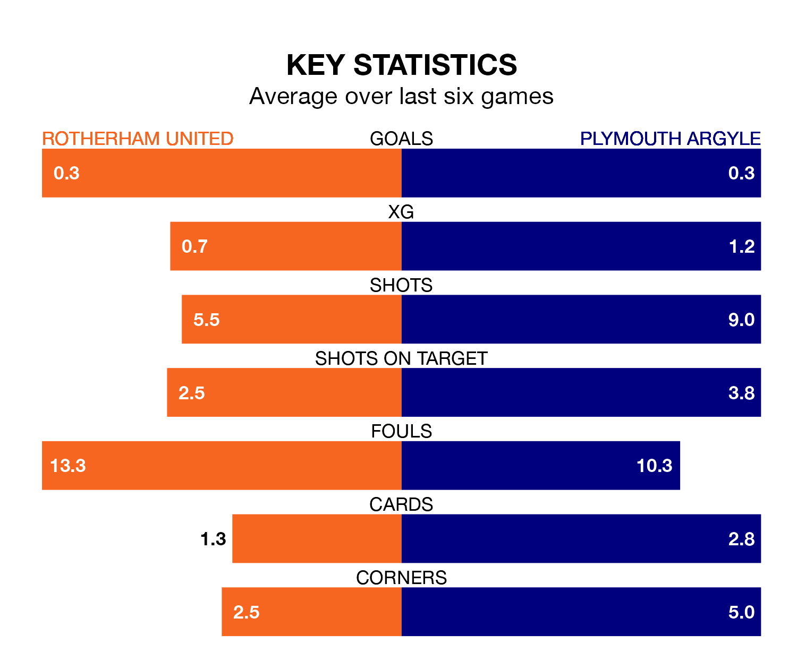

Struggling Rotherham United face Plymouth Argyle at the AESSEAL New York Stadium on Friday looking to build on a win in their last league outing.
After securing all three points with a 2-1 victory over Millwall on Monday, the Millers sit bottom of EFL Championship.
They travel to play a Plymouth side 21st in the standings, who lost in their last match, 1-0 against Bristol City.
Rotherham are in bad form in EFL Championship, with one win and a draw from their last six games.
But with no wins and a draw over that period, Plymouth's form is even worse – they have taken one point from 18, compared to United's four.
In Morgan Whittaker, Argyle have one of the league's sharpest shooters so far this season. He has notched 19 goals in 40 appearances, to sit third in the scoring charts.
The Millers' top scorers, with four goals each, are Tom Eaves and Hakeem Odofin.
With 32 goals in 40 games so far this season, the hosts are the league's second-lowest scorers with 0.8 goals per game. And they are conceding more than average, letting in 81 goals at a rate of 2.0 per game.
The Pilgrims, meanwhile, are average scorers, with 1.4 goals per game. They have conceded 1.6 goals per game.
In the last three years, Rotherham and Plymouth have played each other on three occasions. Rotherham won two of them and Plymouth one.
Their last meeting was on December 16, when Plymouth won 3-2 at home.
Friday's match will be refereed by Oliver Langford, who has taken charge of 24 EFL Championship games so far this season, issuing five red cards and booking 79 players. He has awarded two penalties.
The last Rotherham game Langford refereed was a 1-1 home draw with Leeds United on November 24. His last Plymouth match was their 2-0 loss at home against Millwall on October 3.
Updated: 16:41 (UTC), 04/04/24